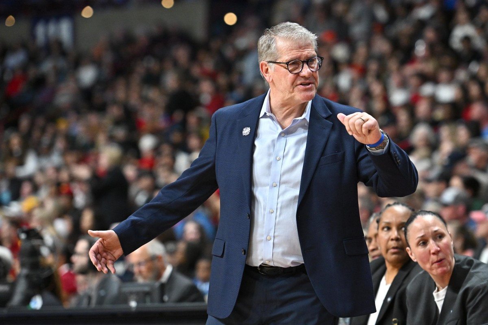
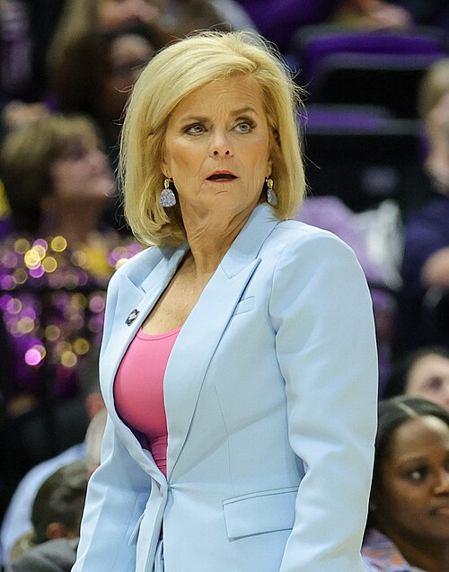

Womens March Maddness
History
The first NCAA womens tournament was held in 1982 after the fall of the Association for Intercollegaite Athletics. This league previosuly held tournaments and a national championship for womens college basketball, but later fell in 1981. Following that, NCAA made the official Womens tournament where Louisiana Tech went on to beat Cheyney. The tournament officialy began with 32 teams, but later expanded to 64 teams in 1994. Just recently in 2022, it expanded to 68 teams with a "first four" play in tournament to match the mens tournament.
Historical Coaches
Geno Auriemma

He was an American basketball coach who is the head coach of the Uconn Huskies women's basketball team. He holds the NCAA basketball records for wins and winning percentage with a minimum of 10 seasons. Auriemma also has the most NCAA Division I basketball championships at 12.
Kim Mulkey

She has been the head coach for Louisiana State University's women's basketball team. A Pan-American gold medalist in 1983 and Olympic gold medalist in 1984, she is the first coach in NCAA basketball history to win national championships as a player, assistant coach, and head coach
Historical Players
Candace Parker

Candace Parker won Back to Back tournaments in 2007 and 2008 while being the first ever female to prefrom a dunk in the tournament. She redshirted her Freshamn Year due to injury, but then continued to be a starter at Tenessee for her next 3 years in the program.
Lorri Bauman

Lorri Bauman set the individual scoring record of 50 points during a loss to Maryland in the first DI women's championship tournament in 1982. This was before the 3-point line was introduced in 1987.